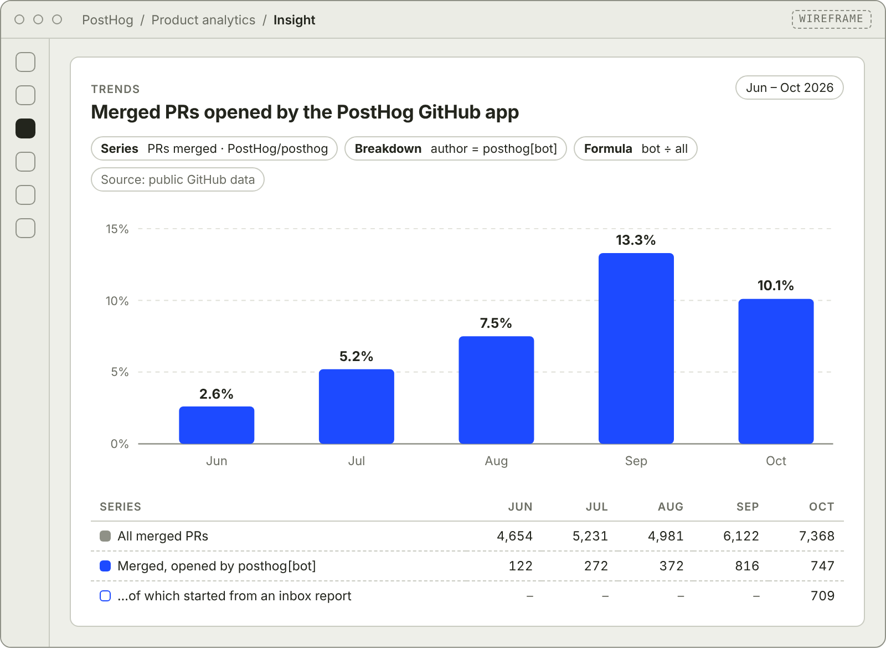
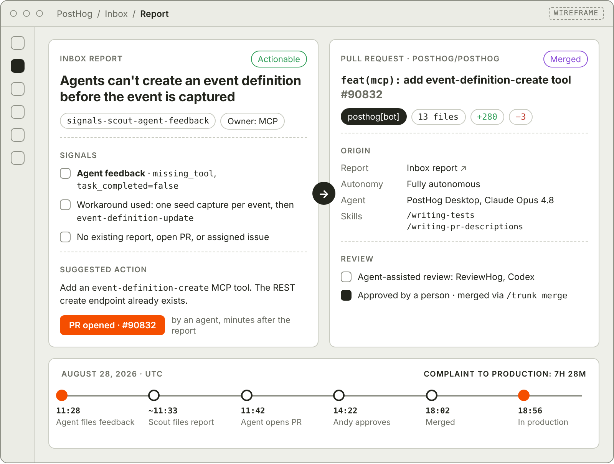
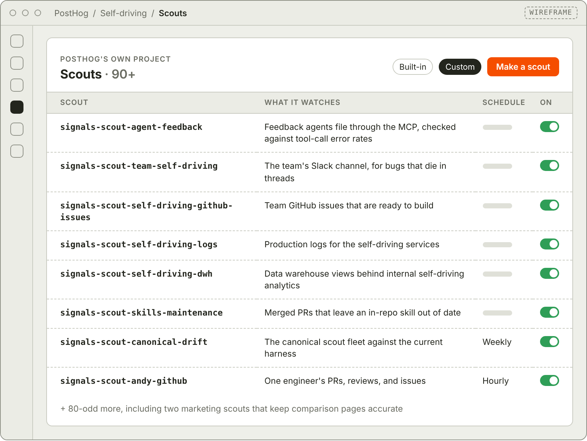

PostHog is the context layer for your product, installed by more than 500,000 organizations, and the company builds PostHog on it.
The PostHog app, the PostHog MCP, PostHog Desktop, and this website all report into PostHog's own project. More than 90 scouts watch that project, most of them every hour.
Andy Maguire used PostHog as a customer before he worked on it. In 2022, Netdata's case study quoted him as its analytics and machine learning lead. Today he's on PostHog's self-driving team, building the loops that turn product data into pull requests, and he runs them on PostHog first.
Those loops exist because PostHog ships more code than its engineers can watch. In January 2026, the team merged 1,441 PRs. By August it was 4,869, with engineering headcount up only 10%. The extra PRs brought more errors, more agent feedback, and more Slack threads asking "is this happening to anyone else?"
The whole timeline from complaint to fix took less than a work day, and the only time I spent on it was reviewing and a bit of prompting.
Agents open most of the PRs now
Over four months this year, the share of PostHog's monorepo PRs opened by agents went from around 20% to 70%. Most of those still start with an engineer prompting an agent. The newest slice is self-driving: PRs that start because a scout or signal source found the problem first.
The loop is the one customers get. Scouts and signal sources like Error Tracking, Logs, and Session Replay emit signals. Signals group into reports in the Inbox. An agent investigates each report and, when it's actionable, opens a PR with the evidence attached.
In October, the PostHog GitHub app opened 1,612 PRs from inbox reports on the main PostHog repo, and the team merged 709 of them, about one in ten of all PRs merged that month. In June, the app's PRs were 2.6% of merges.

Each of those PRs records the scout or source that found the problem, a link to the inbox report, whether a person or an auto-start kicked it off, and which agent, model, and skills wrote it. The repo is public, so anyone can read them.
From an agent's complaint to production in under eight hours
On August 28 at 11:28 UTC, an agent working in a customer's project got stuck. It wanted to define events before any had been captured, but the MCP could only update event definitions, not create them. So it filed missing_tool feedback through the MCP and fell back to an ugly workaround: firing one seed event per definition.
A scout called signals-scout-agent-feedback reads that feedback stream. About five minutes later, after checking for existing reports, open PRs, and assigned issues, it filed a report. At 11:42, an agent in PostHog Desktop opened PR #90832 to add an event-definition-create tool.

The first version needed work. Codex and ReviewHog, PostHog's internal review bot, sent it through rounds of review, and it picked up backend changes and tests along the way. Andy approved it at 14:22, it merged at 18:02, and it was in production by 18:56.
After the merge, the scout kept watching. It notes in its scratchpad what it reported and what shipped, and it closes the theme only once the complaints have stopped.
More than 90 scouts, one inbox
Some of the scouts on PostHog's project come from the built-in set every customer gets. Dozens were written by the teams who own the problem:
signals-scout-team-self-drivingreads the team's Slack channel for bug reports that would otherwise die in a thread.signals-scout-self-driving-github-issuessweeps the team's GitHub issues and starts work on the ones with a clear scope and nothing blocking them.signals-scout-self-driving-logsreads production logs and adds new evidence to an existing report instead of opening a duplicate.- A Replay Vision scanner watches recordings of PostHog Desktop for people getting visibly stuck.

Because every scout is a skill, changing what one looks for doesn't need a deploy. Skills created in PostHog's internal project went from 62 in late April to 761 by the end of September, and Andy's agents loaded one in 78% of his chats across a recent 28-day stretch.
I can have more of these going at once because I don't need to watch each agent work. Writing a good issue and checking the result still take time, but that feels like a much better use of mine.
Natalia Amorim on the marketing team writes scouts too. She runs two over PostHog's 90-odd comparison pages: one watches competitors' pricing and docs, and the other checks PostHog's own pages against the changelog, docs, and open PRs, because one embarrassing way to get a comparison wrong is underselling yourself. Findings arrive in Slack and the inbox with a suggested edit, and a person decides whether it becomes a PR. Across the whole website repo, the PostHog GitHub app had 68 PRs merged in October.
The scout does the noticing, a human does the deciding, and nobody needs to add a recurring "re-read every competitor's pricing page" task to their calendar.
Fewer than half the auto-started PRs get merged
Of October's self-driving PRs that have since been merged or closed, the ones that started automatically after a report was triaged were merged about 41% of the time. When a person picked the report from the inbox first, that rose to about 82%. The rest were closed without merging.
Some problems need a human from the start. On September 5, an MCP error-rate alert fired at 9.9%, against a usual 0.3% to 1.2%. The investigation traced it to a mismatch between two separately deployed workers, and Andy steered the fix himself.
So, the alert didn't autonomously fix production while I made coffee, since this one needed more steering from me than the others. But it caught the problem, gave me a starting investigation, and helped me get a compatibility fix merged. I'll take that.
The team also checks whether the extra PRs are breaking production. Reverts were 0.2% of merged PRs in June, in line with the 0.1% to 0.4% of the year before, when people wrote most of the code. GitHub data streams into the context warehouse too, and the team asks PostHog AI which CI jobs cost the most and fail most often.
For now, Andy still reviews the reports and the PRs himself.
I'm on the fence about how long I'll want that, but for now I still like deciding what actually ships.